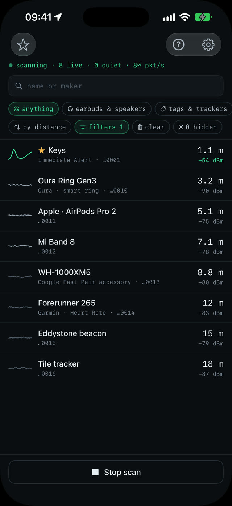
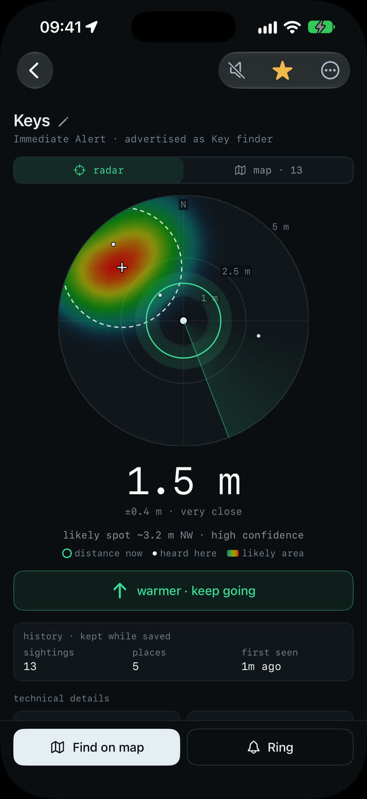
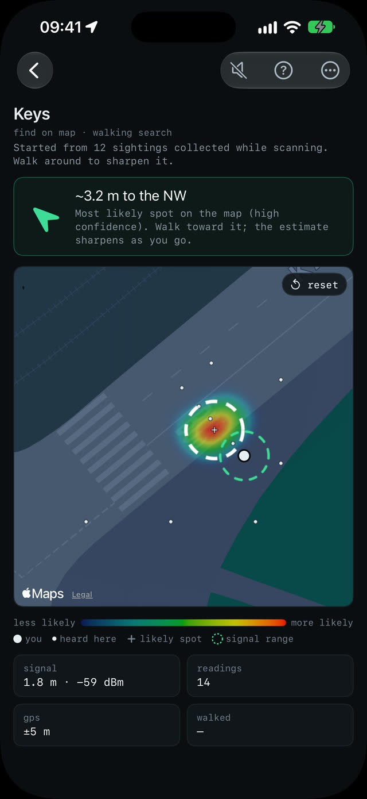
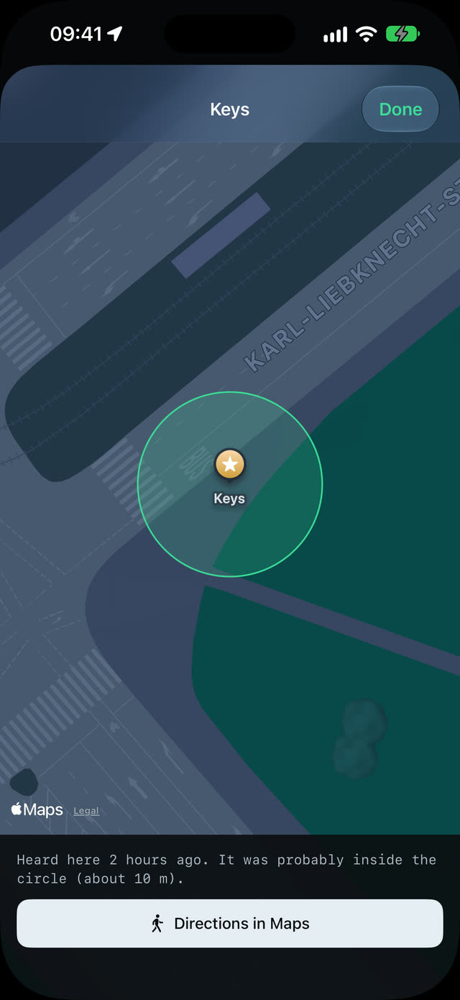
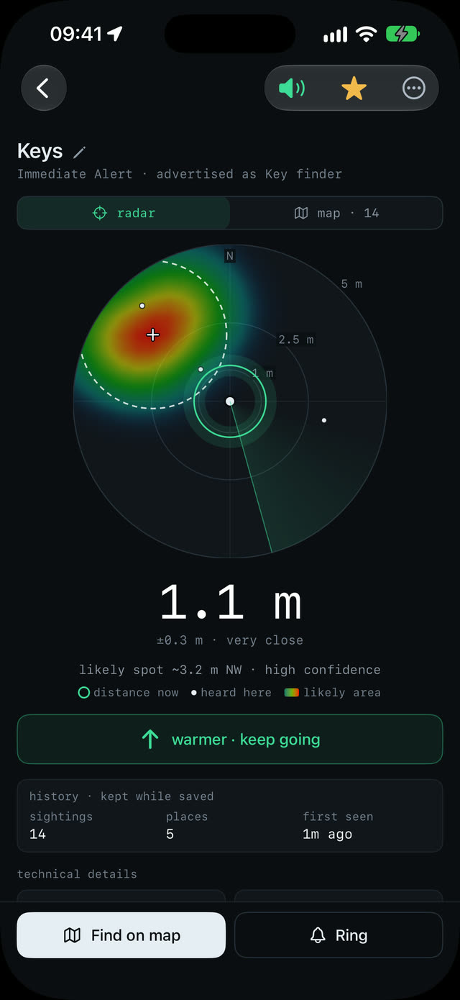
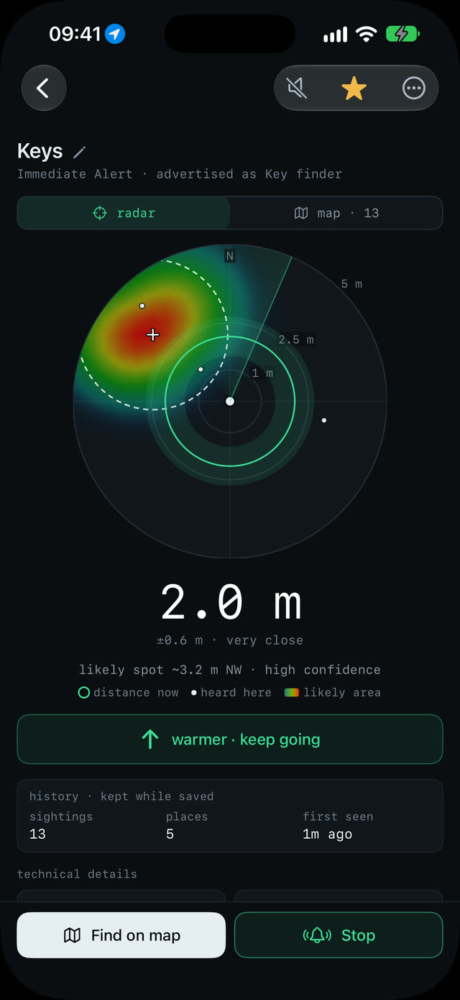
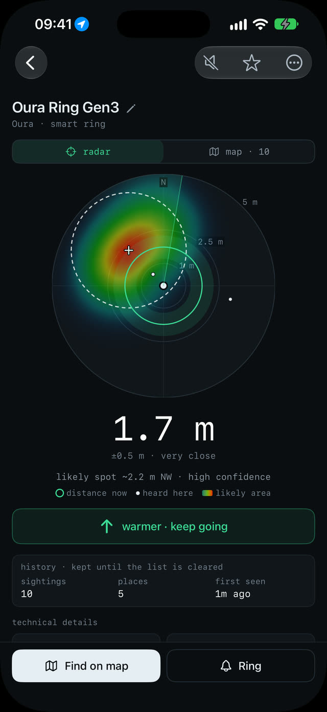

scanning · 8 live · 80 pkt/s
Find a lost Bluetooth device
Lost your earbuds, a tracker or a smart ring? Bluetooth Locator hears it, tells you how far away it is, and walks you to it. No account, nothing to set up first, nothing leaves your iPhone.
- iPhone & iPad
- iOS 18.6+
- free to try
how it works
How far, and where to look
Signal strength says how far away a device is, not which way. The app turns it into a ring around you, then, as you walk, into a map of where the device probably is.
-

01 · scan
Start the scan
No sign-up, no settings to get through. The list fills within seconds, nearest first, and says what each device is: earbuds, tags, watches, bands, smart rings.
-

02 · radar
Find it fast
A ring around you shows how far away it is. Walk slowly: warmer or colder tells you within seconds whether you're getting closer.
-

03 · map
Know which way
Walk a little and a heat map builds up from where the device was heard. The likely spot gets a cross, and an arrow points the way.
what else
Made for the moment you've already lost something
It works before it asks you for anything: open it, start the scan, tap the thing you're looking for.
-

Never lose it twice
Last heard here, with the way back
-

Search by ear
Pings speed up as you get closer
-

Make it beep
Ring a tag or sound your headphones
-

Smart rings too
Distance tuned for a ring's antenna
knows what it hears
Earbuds to smart rings
Earbuds, speakers, watches, bands, tags, trackers and smart rings, with maker and model when the device says so.
your things first
Phones and computers hidden
Nearby phones and laptops are left out, so the list shows the things people lose. One tap brings them back.
smart rings done right
Oura, Ultrahuman, RingConn, Galaxy Ring
Distance fitted to a real ring, which the usual formula puts several times too far away.
find my devices
AirPods and AirTags show up too
With a shortcut to Find My, the only app that can make them ring.
connected headphones
Play a sound on them
Headphones go quiet while they're connected to your iPhone. The app can sound an alarm on them instead.
for the curious
Signal chart, decoded packets
Thirty seconds of signal strength and every field of the advertisement, decoded.
privacy
Stays on your iPhone
There's no account and no server. The devices the app hears, the places it heard them from and the devices you save are kept on your iPhone, and nowhere else.
Location and Motion are asked for only when a search needs them, and used only while the app is open.
collected data
- account
- none
- analytics
- none
- ads
- none
- tracking
- none
- our servers
- none
- sightings
- On your iPhone only
- network
- The App Store, for the purchase. Apple Maps, for map tiles.
free and paid
Free to use. One purchase for the rest.
No subscription. The App Store shows the price in your currency before you buy.
free
Is it here, and how far?
Everything you need to find out.
- Scanning, the device list and its filters
- Distance, with warmer / colder
- The radar and the map, free to try
- Finding tips
- The connected-headphones alarm
full version · one purchase
Walk straight to it
Unlocked for good, on every device with your Apple Account.
- The radar and the map, with no time limit
- Find on map: the walking search
- Saved devices, with where they were last heard
- Ring, for tags and key finders
- Proximity pings
- Accent colors
Free to try means a minute of radar and map in total, then ten seconds each time you open a device. Restore purchase in Settings brings the full version to a new iPhone.
good to know
What Bluetooth can and can't do
An honest picture, so you know what to expect before you start walking.
it has to be on
A device can be found only while it's on and advertising. Earbuds usually advertise out of the case or with the lid open; a flat battery sends nothing.
about ±30 %
Distance is an estimate from signal strength. Walls, bodies and metal weaken the signal, so things can read farther away than they are.
rings · a few meters
A smart ring is heard only within a few meters, less with a hand around it, and not at all with a flat battery.
Can't see your device? The support page has the tips.